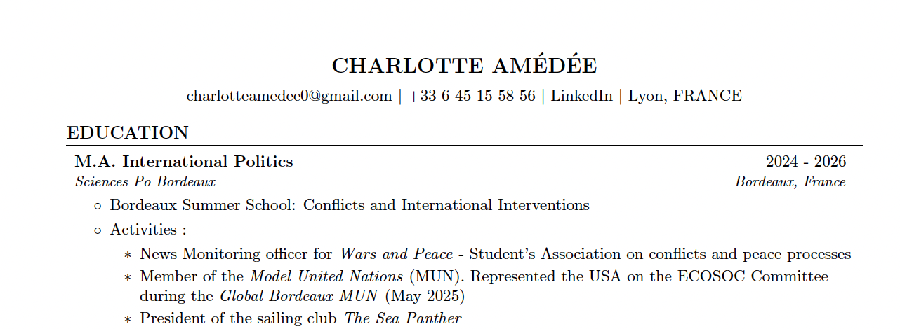
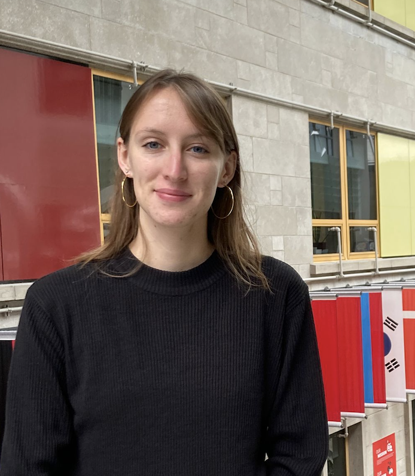

Consultez mon CV
Cliquez sur l'image ci-dessus ou sur le lien ci-dessous pour ouvrir mon CV en PDF dans un nouvel onglet.


Etudiante de maîtrise en Relations Internationales et Diplomatie.
Passionnée de politique internationale, j'ai terminé en 2026 mon master de Politique internationale à Sciences Po Bordeaux. Mon échange universitaire dans la maîtrise en relations internationales et diplomatie de l'Université Laval (Québec) m'a permis de me spécialiser sur l'analyse de conflits civils et d'aquérir des nouvelles compétences à la fois en gestion de projets, en droit international pénal et de maîtriser de nombreux outils numériques aujourd'hui essentiels.
J'ai effectué mon stage de fin de master au sein de la Chancellerie politique de l'Ambassade de France à Windhoek , en Namibie, où j'ai pu mettre en pratique l'ensemble de mes compétences d'analyse de politique intérieure et extérieure, ainsi que de communication.
Enfin, je porte un intérêt tout particulier à l' étude des conflits civils et internationaux , en particulier dans les cadres des différents travaux que j'ai pu réaliser. Je cherche aujourd'hui à approfondir mes connaissances sur les enjeux de gouvernance sur le continent africain.
Lors de mes différentes activités extra-scolaires, j'ai touché de près ou de loin aux questions de paix et d'études des conflits internationaux, sous des formes diverses.
Participation à la Bordeaux Summer School sur les conflits et Interventions internationales .
Veille d'actualité des conflits et processus de paix internationaux dans l'association Guerres et Paix.
Recherche sur les enjeux des chemins de fer dans la guerre en Ukraine .
Simulations de négociations auprès du MUN de Sciences Po Bordeaux.
Vous trouverez ci-dessous un aperçu de mon parcours académique et extra-scolaire, centré sur l’analyse des conflits en particulier.

Cliquez sur l'image ci-dessus ou sur le lien ci-dessous pour ouvrir mon CV en PDF dans un nouvel onglet.
Voici un aperçu de mes essais et mémoire réalisés au cours de mes études à Sciences Po Bordeaux et à l'université Laval.

Cliquez sur l'image ou sur le lien ci-dessous pour lire mon mémoire.

Cliquez sur l'image ou sur le lien ci-dessous pour lire cet essai.

Cliquez sur l'image ou sur le lien ci-dessous pour explorer le contenu de ce projet.

Cliquez sur l'image ou sur le lien ci-dessous pour lire cet essai.
Vous pouvez me contacter pour discuter d'opportunités de stage ou pour échanger sur des sujets liés à l'analyse de conflits.